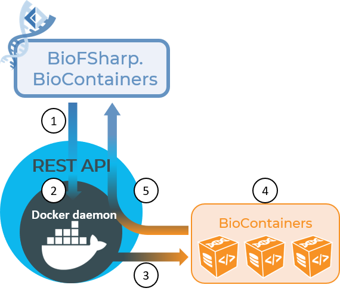

BioFSharp.BioContainers
BioFSharp.BioContainers is all about connecting BioFSharp and F# itself with the Bioinformatics community and integrating common bioinformatic workflows.There are many established tools and software suites in bioinformatics, and most of the time there is no point in rewriting them for a specific programming language. Containerized applications make it possible to use all these tools while being OS and programming language agnostic - meaning you can use containerized linux tools in your windows based pipeline, python applications in containers followed by a containerized C++ application and so on. Take a look at this graphic to get an overview of how BioFSharp.BioContainers works in principle:

BioFSharp.BioContainers gives you the possibility to leverage containerized applications without leaving you F# environment. We build on the fondation of Docker.DotNet to programmatically access the the REST API on top of the docker daemon (1 + 2). The daemon then does its thing, executing the commands given, for example creating containers, executing computations in a container, etc (3). We provide special functions to use with biocontainers, which is a standardized way to create containerized bioinformatic software (4). The results are then returned via the daemon and REST API back to you F# interactive (5)
The project is in its early stages and many features provided by the REST API are not fully implemented yet, so if you would like to help out, this is a great place to do so!
Prerequisites
Windows
- Install Docker Desktop for windows
Linux
- Not tested yet, but If there is a way to use a named pipe as in windows, everything should work as it does on windows.
General Usage
lets say we have Docker for Windows set up and pulled an ubuntu image (docker pull ubuntu). To connect with the Rest API, first use the
Docker.connect function to initialize a Docker Client.
1: 2: 3: 4: |
|
Some vanilla docker commands are already implemented. here is an example of listing information about all images from F# interactive
(equivalent to docker images ls -a in docker cli)
1: 2: 3: 4: 5: 6: |
|
Output:
1: 2: |
|
Creating containers and executing commands in them
To create a container from an existing image, initialite a BioContainer.BcContext. That way, a new
container will not only be spawned, but kept running to receive your commands.
1: 2: 3: 4: 5: 6: 7: |
|
To run a command in the container, use either BioContainer.execAsync to run the command, only printing
stdout/stderr to the F# interactive, or BioCOntainer.execReturnAsync to get stdout/stderr as a string that
you can bind to a name
1: 2: 3: 4: 5: 6: 7: 8: |
|
Don't forget, the container will be kept running, so dispose it if you do not need it anymore to prevent it from eating up ressources
1: 2: 3: |
|
Using actual biocontainers
To leverage the advantages of F#, namingly its type safety, passing commands as strings is not enough. The tools in BioContainers come with extensive documentation of input commands and allowed/parsed types. We here propose a type safe modelling of the commands, with a little bit of overhead to ensure correct paths (going from windows to linux paths in the containers). We already provide API wrappers for some tools, such as BLAST, TMHMM, or intaRNA. If you want to create your own, please refer to the design guide.
Here is a short example for BLAST (indepth information about this the type modelling of this tool can be found here:
First you have to either pull the BLAST BioContainer image either via docker cli or by building them from the docker file A way to do this from F# is in the making.
The protein fasta used here can be found here
1: 2: 3: 4: 5: 6: 7: 8: 9: 10: 11: 12: 13: 14: 15: 16: 17: 18: 19: 20: 21: 22: 23: 24: 25: 26: 27: |
|
npipe://./pipe/docker_engine is the named pipe for the docker engine under windows.
module Docker
from BioFSharp.BioContainers
--------------------
namespace Docker
from BioFSharp.BioContainers.Docker
from Microsoft.FSharp.Collections
val seq : sequence:seq<'T> -> seq<'T>
--------------------
type seq<'T> = System.Collections.Generic.IEnumerable<'T>
Create a representation of your image on the F# side
| ImageId of string
| ImageName of string
| ContainerId of string
| ContainerName of string
| Tag of string * string
override ToString : unit -> string
Create a container from the image and keep it running (the container context for all future commands)
from BioFSharp.BioContainers
type Async =
static member AsBeginEnd : computation:('Arg -> Async<'T>) -> ('Arg * AsyncCallback * obj -> IAsyncResult) * (IAsyncResult -> 'T) * (IAsyncResult -> unit)
static member AwaitEvent : event:IEvent<'Del,'T> * ?cancelAction:(unit -> unit) -> Async<'T> (requires delegate and 'Del :> Delegate)
static member AwaitIAsyncResult : iar:IAsyncResult * ?millisecondsTimeout:int -> Async<bool>
static member AwaitTask : task:Task -> Async<unit>
static member AwaitTask : task:Task<'T> -> Async<'T>
static member AwaitWaitHandle : waitHandle:WaitHandle * ?millisecondsTimeout:int -> Async<bool>
static member CancelDefaultToken : unit -> unit
static member Catch : computation:Async<'T> -> Async<Choice<'T,exn>>
static member Choice : computations:seq<Async<'T option>> -> Async<'T option>
static member FromBeginEnd : beginAction:(AsyncCallback * obj -> IAsyncResult) * endAction:(IAsyncResult -> 'T) * ?cancelAction:(unit -> unit) -> Async<'T>
...
--------------------
type Async<'T> =
bind the results of the command to a value
from BioFSharp.BioContainers
this time, we set the container up using a mount, making sure that it can access data from the file system we want to use.
parameters for search DB creation
parameters for blastP
| SearchDB of string
| Query of string
| Output of string
| OutputType of OutputType
| OutputTypeCustom of OutputType * seq<OutputCustom>
| Num_threads of int
| Max_Hits of int
static member makeCmd : (BlastParams -> string list)
static member makeCmdWith : m:MountInfo -> (BlastParams -> string list)
union case BlastParams.OutputType: OutputType -> BlastParams
--------------------
type OutputType =
| Pairwise
| Query_anchored
| Query_anchored_NoIdentities
| Query_anchored_Flat
| Query_anchored_Flat_NoIdentities
| XML
| Tabular
| TabularWithComments
| TextASN1
| BinaryASN1
...
static member make : (OutputType -> int)